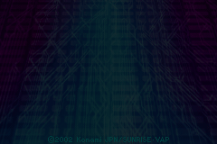
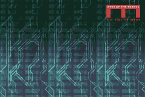

Zone of the Enders - The Fist of Mars (USA)
Stateless / Passcode
Cartridge Identity
- Game Code
AZEE(FamilyAZE)- Header Title
Z.O.E USA- Maker / Revision
A4/ rev0- ROM Size
- 8.0 MiB (8,388,608 B)
- Save Media
None / Unknown- SHA-256
114fff29e5642300a9b3698916ecd86682aa6da0fd821065b7431ba8c059f0f2- Engine / SDK Group
comm-039(5 families)
Screenshots


Cartridge Storage Architecture: Stateless / Passcode
Zero non-volatile battery hardware: This cartridge PCB contains ROM only (no SRAM, Flash, or EEPROM chips). Progression is preserved via on-screen passcodes or session-only gameplay. No
.sav file is generated or required.
ROM Assets, Compression & Audio
- BIOS Compression
- LZ77 (
0x10): 0 streams · RLE (0x30): 0 streams - ROM Pointer Tables
- 34 tables (0 pointing to validated compressed streams)
- SDK Backup Tags
FLASH_V126
Hardware MMIO Subsystems
ppu_display0x8005514
Regional Variants & Revisions (Family AZE)
- Z.O.E. 2173 - Testament (Japan) (
AZEJ, 8 MiB) - Zone of the Enders - The Fist of Mars (Europe) (En,Fr,De) (
AZEP, 8 MiB)